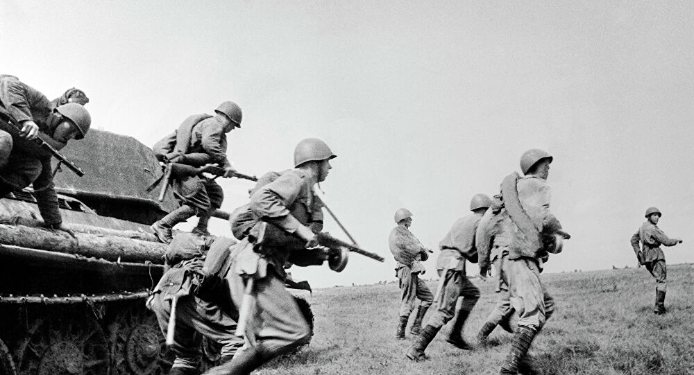
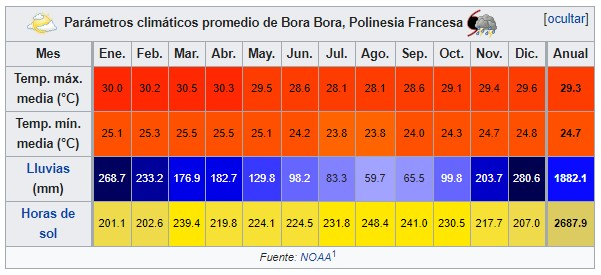
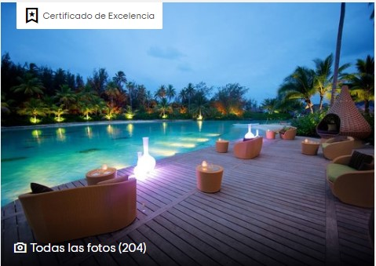
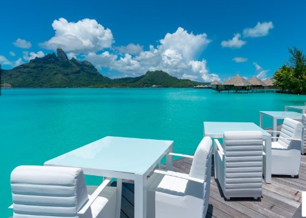
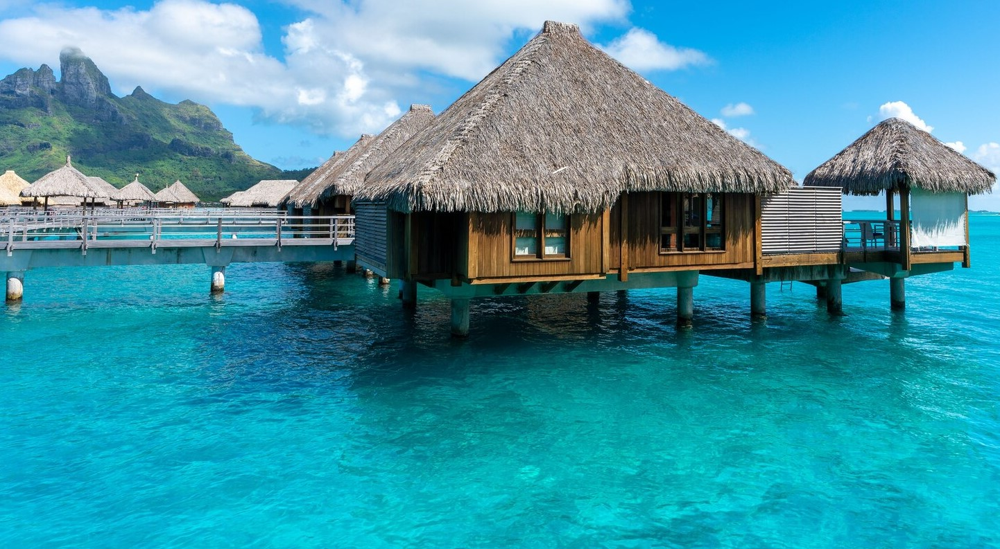
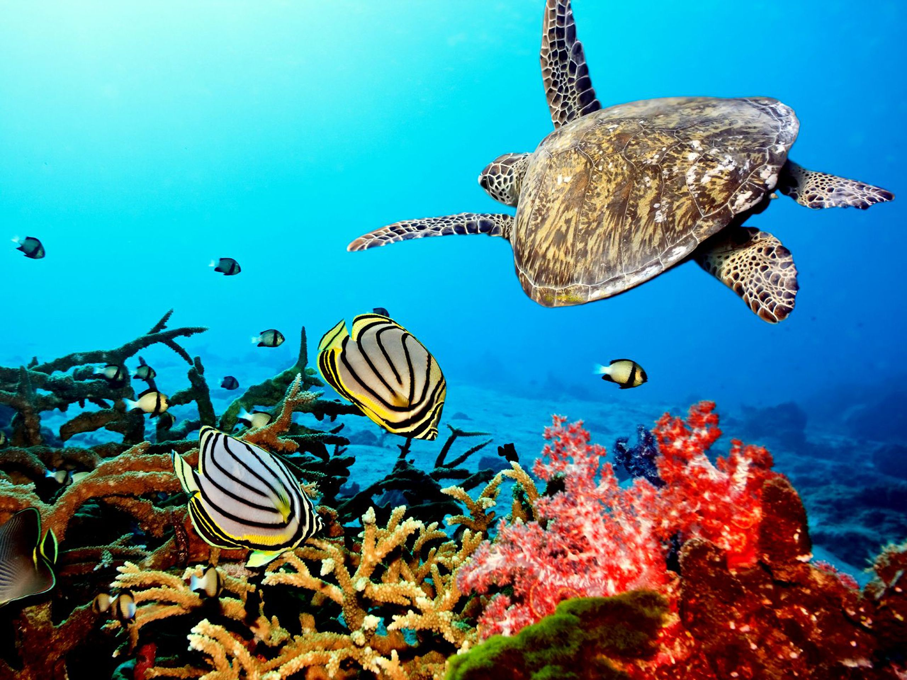
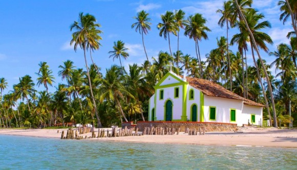
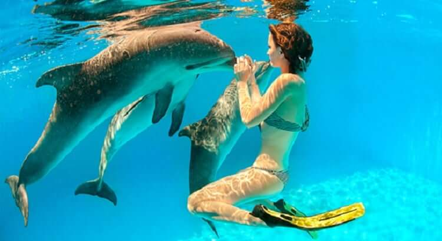
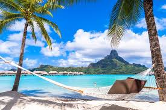
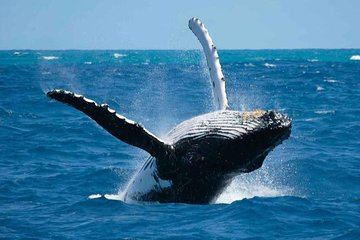

Bora Bora es uno de esos destinos exóticos que aún se puede visitar con la sensación de estar en otro mundo, un paraíso natural en la recóndita Polinesia Francesa. Sus mayores atractivos son sus playas, esas aguas cristalinas salpicadas de arrecifes de coral, la observación de la vida submarina y los bungalows sobre el agua.
Desde el aire se aprecia un inmenso archipiélago con una paleta de colores que abarca todas las tonalidades, desde el verde más suave hasta el azul más intenso. Es un lugar romántico y sensual con exuberantes paisajes, vegetación y fauna en estado puro. Como fondo de este increíble cuadro, un imponente mar color azul turquesa con bellas arenas blancas.
El telón de fondo histórico de esta isla se remonta al 300 dC cuando los grupos de personas vírgenes de la Polinesia comenzaron a ser poseídos por marineros y marineros, que cruzaron las impresionantes separaciones del mar para asentarse y poblar las islas del Pacífico.
Al principio, las islas de Polinesia estaban controladas por caciques. Se confía en que sus nuevos inquilinos permanezcan en el sudeste asiático alrededor de tres mil quinientos años atrás en busca de tierras peculiares y remotas como Nueva Zelanda, Nueva Guinea, Tonga, las Islas Cook, Hawai y la actual Polinesia Francesa. Con la progresión del tiempo, este distrito ha cambiado algunas veces la guía política. En un primer intento, hacia el final de 1700, los británicos intentaron representar a la Polinesia golpeando y atacando el área, lo que provocó un aumento relativo del control de las islas.
A mediados del siglo XIX, los franceses comenzaron a tomar el control de algunos de los archipiélagos que componen la Polinesia. Después de algunos peligros políticos y aplazar los movimientos, los franceses prevalecieron con respecto al desarraigo de los ingleses en 1842 y obtuvieron casi la región agregada, que pronto un tiempo después terminó autoritariamente en la Polinesia Francesa.
En la Segunda Guerra Mundial, los Estados Unidos escogieron a Bora Bora como una base de suministro militar para el Pacífico Sur, y se reunieron una bodega de petróleo, una pista de aterrizaje, una base de hidroaviones y fortalezas protectoras. Al final de la guerra, y con la resolución del gobierno francés del 24 de marzo de 1945, los habitantes de Bora-Bora obtienen la ciudadanía francesa. A partir de 1958, la pista del aeropuerto construida por los estadounidenses permite la apertura de una conexión París-Bora Bora. Esta nueva línea aérea permite la llegada de los primeros turistas a la isla. Pero es la transformación de la pista, así como de la consiguiente apertura en 1961 del aeropuerto internacional Tahití Faa'a, en la isla de Tahití, lo que va de verdad a permitir el desarrollo del turismo de masas en Bora-Bora. El primer hotel abre el mismo año, en el sur de la isla. El 17 de mayo de 1972, Bora-Bora accede al estatuto de municipio. Esta nueva existencia jurídica y administrativa es una etapa esencial para el desarrollo de la isla.

Clima
Su clima es tropical marítimo con lluvias monzónicas de verano. Las lluvias son abundantes y ocurren principalmente entre noviembre y abril, en el verano meridional o austral. Predomina el tiempo cálido durante todo el año.

Restaurantes Recomendados
Le coralí
Tocando la arena de la playa de Santa Susanna pero dentro de nuestro recinto, tenemos nuestro Restaurante Bora Bora donde ofrecemos todo tipo de platos, bocadillos, bebidas y helados.
Tipo de comida:Francesa
Dietas especiales:Opciones sin gluten

St James Bora bora
El restaurante Tahaa, situado en el edificio Suites, ofrece una experiencia gastronómica con una combinación perfecta de tradición y modernidad. La característica principal, equilibrar gustos y sabores.
Restaurante de cocina internacional tipo buffet con estaciones de cocina en vivo, rincones gastronómicos con especialidades de diversos países y variedad culinaria en porciones individuales, la carta de vinos elaborada por nuestro sommelier con variedades de vinos nacionales e internacionales que les dejaran diferentes tipos de aromas.
Tipo de comida:Francesa, Mariscos, Europea, polinesia
Dietas especiales: Opciones veganas, opciones vegetarianas, opciones sin gluten
Lagoon Restaurant By Jean Georges
Tocando la arena de la playa de Santa Susanna , el restaurante ofrece todo tipo de platos, bocadillos, bebidas y helados. Es un lugar ideal para todos aquellos que teniendo quieran comer a un buen precio sin tener que salir del Hotel.

Sitios Por Conocer
La playa de la punta Vénus
La Laguna de Bora Bora
La arena rosa de fakarava
Rangiroa, la isla de los arrecifes en las Tuamotu
Las granjas de perlas de Manihi en las islas Tuamotu
Las platas de tikehau en las islas de Tuamotu
Las iglesias de las islas Gambier



El plan en Bora Bora
Los cinco archipiélagos de la Polinesia Francesa cuentan con 118 islas, 76 de ellas habitadas, y un sinfín de paisajes diferentes, entre volcanes y arrecifes de coral. Islas de la Sociedad, islas Marquesas, Australes, Tuamotu y Gambier: ¡Tienes de sobras para elegir! Surf, baños en el mar, senderismo, submarinismo... ¿Por dónde empezamos?
Recorrer la isla en bici
Senderismo
Dormirse mecido por las olas en un bungalow sobre pilotes
Contemplar las rayas y los delfines buceando en las Marquesas
Pasar un día entero en la playa
Recogerse en el recinto sagrado Marae de Taputapuatea, Patrimonio Mundial de la UNESCO
Observar las ballenas en primera fila, en Rurutu, en las islas Australes



Con quién me gustaría ir
Me gustaría ir con mi pareja; el romanticismo se impregna en cada rincón de la isla. Los atardeceres dorados que iluminan los picos, las aguas tranquilas de su laguna y la privacidad de los bungawols, es una garantía de pasar momentos íntimos e irrepetibles en pareja.